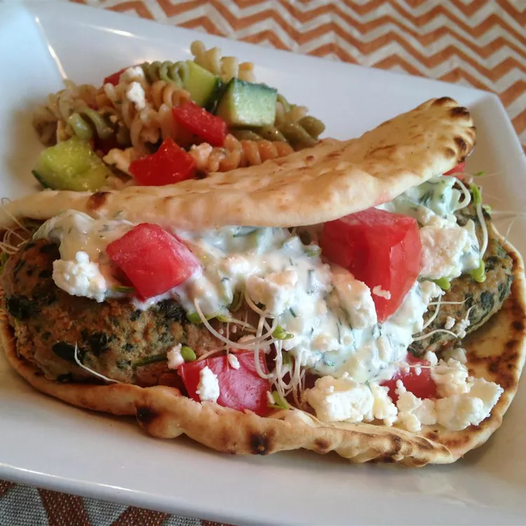

Spinach and Feta Turkey Burgers

Receta de hamburguesa de espinaca con queso feta
Best burguer to enjoy this summer!
Ingredients:
- Cooking spray
- 2 pounds ground turkey
- 1 (10 ounce) box frozen chopped spinach
- 4 ounces feta chese
- 2 large eggs, beaten
- 2 cloves garlic, minced
Directions
- Preheat an outdoor grill for medium-high heat and lightly oil the grate.
- Mix together turkey, spinach, feta, eggs, and garlic in a large bowl until well combined; form into 8 patties.
- Cook patties on the preheated grill on both sides until no longer pink in the center, 15 to 20 minutes. An instant-read thermometer inserted into the center of patties should read at least 165 degrees F (74 degrees C)./li>
Home